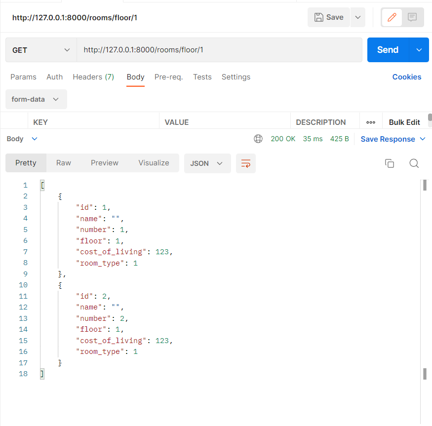
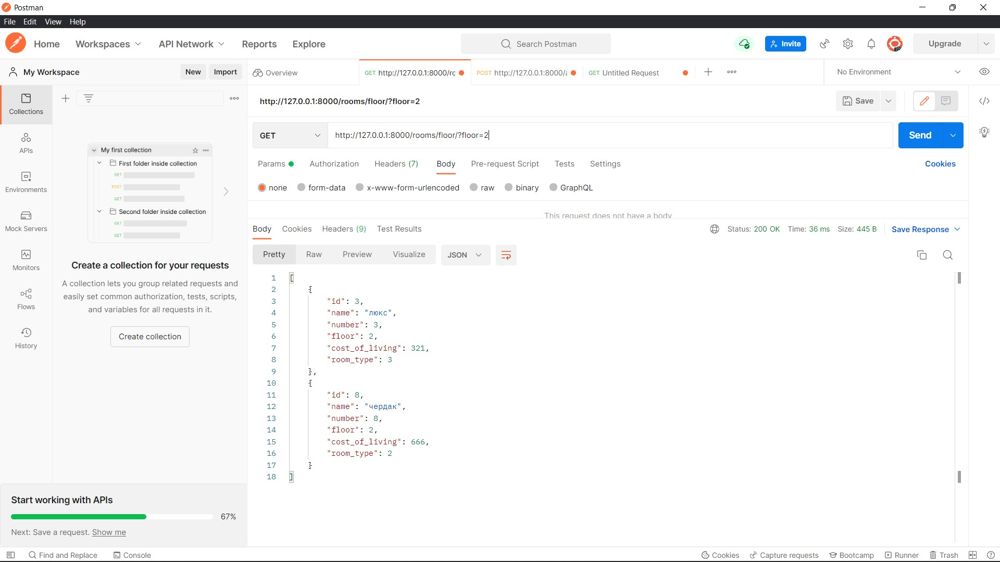
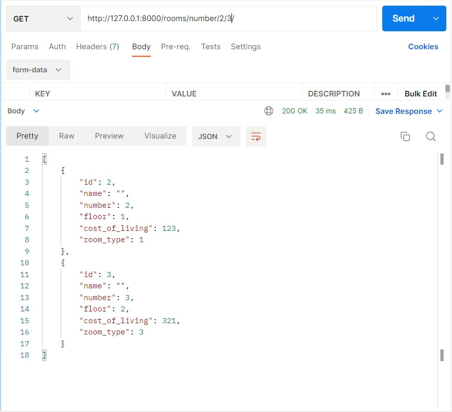
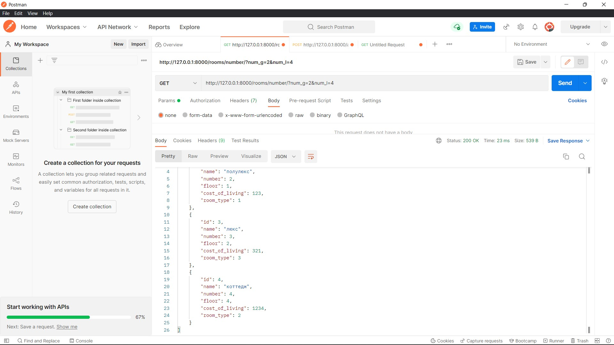
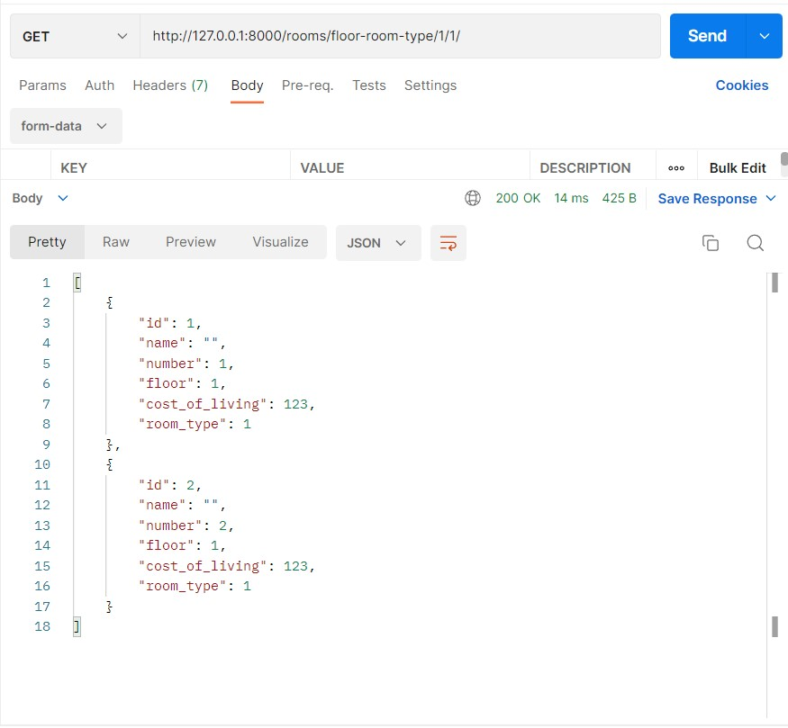
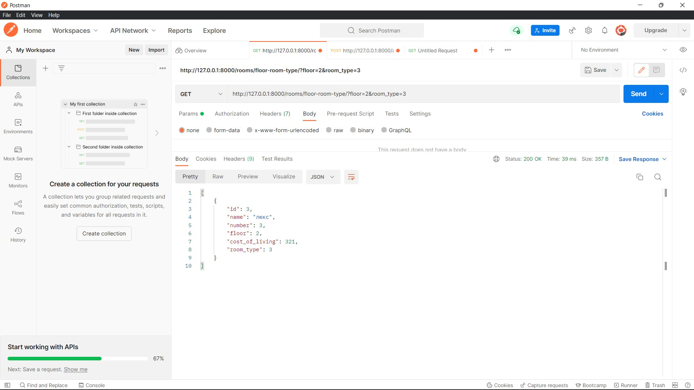

Задание 2.1.1
Реализвать в ручную следующие фильтры (в ручную значит, что Вам необходимо передать в url параметры, далее переопределть метод list или get_queryset, c целью взять параметры из url-адреса, выполнить с ними запрос и вернуть responce пользователю):
- принимает параметр из url-адреса и выводит отфильтрованные данные. (GET, ListAPIView)
- принимает 2 параметра из url-адреса и выводит отфильтрованные данные. (GET, ListAPIView)
- принимает 2 параметра из url-адреса и выводит отфильтрованные данные, если пользователь авторизован и неотфильтрованные, если не авторизован. (GET, ListAPIView)
Эндпоинты:
path('rooms/floor/<int:floor>/', RoomFloorFilterView.as_view()),
path('rooms/number/<int:num_g>/<int:num_l>/', RoomNumbersFilterView.as_view()),
path('rooms/floor-room-type/<int:floor>/<int:room_type>/', RoomFloorRoomTypeFilterView.as_view())
обновленные эндпоинты:
path('rooms/floor/', RoomFloorFilterView.as_view()),
path('rooms/number/', RoomNumbersFilterView.as_view()),
path('rooms/floor-room-type/', RoomFloorRoomTypeFilterView.as_view())
Фильтрация комнат по этажам:
class RoomFloorFilterView(ListAPIView):
queryset = Room.objects.all()
serializer_class = RoomSerializer
permission_classes = [IsAuthenticated]
def get_queryset(self):
queryset = self.queryset.filter(floor=self.kwargs['floor'])
return queryset

фильтрация комнат по этажам через get параметры:
class RoomFloorFilterView(ListAPIView):
queryset = Room.objects.all()
serializer_class = RoomSerializer
permission_classes = [IsAuthenticated]
def get_queryset(self):
queryset = self.queryset
floor = self.request.query_params.get('floor')
if floor:
queryset = queryset.filter(floor=floor)
return queryset

Фильтрация и диапазон номеров комнат:
class RoomNumbersFilterView(ListAPIView):
queryset = Room.objects.all()
serializer_class = RoomSerializer
permission_classes = [IsAuthenticated]
def get_queryset(self):
queryset = self.queryset.filter(number__gte=self.kwargs['num_g'], number__lte=self.kwargs['num_l'])
return queryset

фильтрация и диапазон комнат через get параметры:
class RoomNumbersFilterView(ListAPIView):
queryset = Room.objects.all()
serializer_class = RoomSerializer
permission_classes = [IsAuthenticated]
pagination_class = PageNumberPagination
def get_queryset(self):
queryset = Room.objects.all()
number__gte = self.request.query_params.get('num_g')
number__lte = self.request.query_params.get('num_l')
if number__gte and number__lte:
queryset = queryset.filter(number__gte=number__gte, number__lte=number__lte)
return queryset

Фильтрация номеров по этажу и типу комнаты:
class RoomFloorRoomTypeFilterView(ListAPIView):
queryset = Room.objects.all()
serializer_class = RoomSerializer
# permission_classes = [IsAuthenticated]
def get_queryset(self):
queryset = self.queryset.all()
if not self.request.user.is_anonymous:
queryset = queryset.filter(floor=self.kwargs['floor'], room_type=self.kwargs['room_type'])
return queryset

фильтрация номеров по этажу и типу комнаты через get параметры:
class RoomFloorRoomTypeFilterView(ListAPIView):
queryset = Room.objects.all()
serializer_class = RoomSerializer
# permission_classes = [IsAuthenticated]
def get_queryset(self):
queryset = self.queryset.all()
if not self.request.user.is_anonymous:
floor = self.request.query_params.get('floor')
room_type = self.request.query_params.get('room_type')
if floor:
queryset = queryset.filter(floor=floor)
if room_type:
queryset = queryset.filter(room_type=room_type)
return queryset
